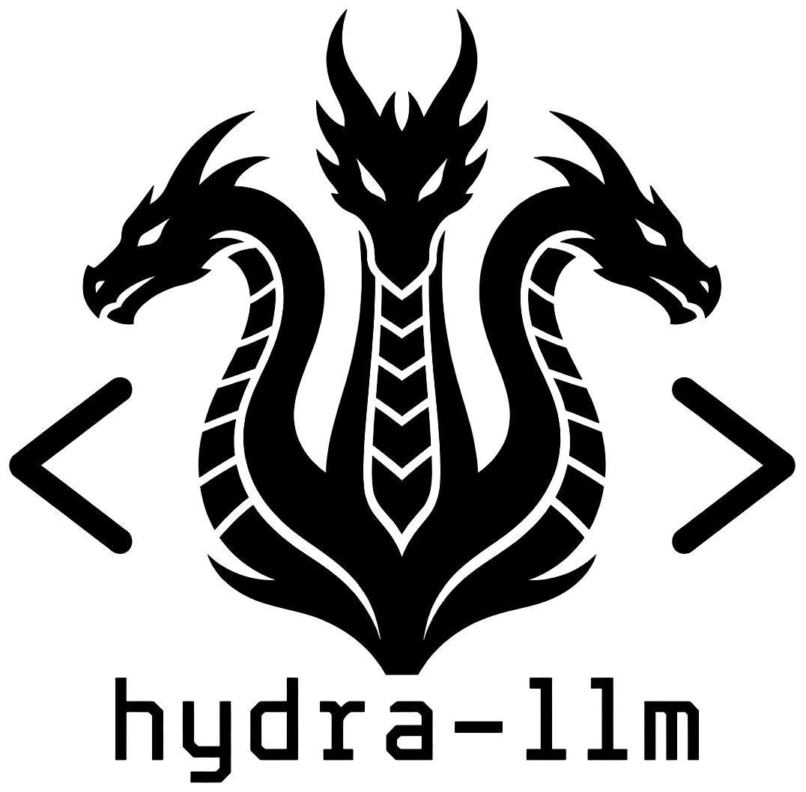

ra-yavuz / hydra-llm

hydra-llm
Run local LLMs the easy way. One CLI plus a KDE Plasma panel widget to download, start, chat with, and monitor models in Docker. Stable OpenAI-compatible endpoints on local ports, so any tool that speaks /v1/chat/completions just works. No cloud, no API key, no telemetry.
Install
~/.local/bin, builds the engine image, downloads a starter model, runs a smoke test.
curl -fsSL https://raw.githubusercontent.com/ra-yavuz/hydra-llm/main/get.sh | bashsudo. The installer asks for sudo only for missing system packages (Docker, python3-yaml).
apt install:
sudo install -d -m 0755 /etc/apt/keyrings
curl -fsSL https://ra-yavuz.github.io/apt/pubkey.gpg \
| sudo tee /etc/apt/keyrings/ra-yavuz.gpg >/dev/null
echo "deb [signed-by=/etc/apt/keyrings/ra-yavuz.gpg] https://ra-yavuz.github.io/apt stable main" \
| sudo tee /etc/apt/sources.list.d/ra-yavuz.list
sudo apt update
sudo apt install hydra-llm hydra-llm-plasma # plasma widget is optionalhydra-llm runs every model in a Docker container. If you do not have Docker yet: sudo apt install docker.io && sudo usermod -aG docker "$USER", then log out and back in.
Quick start
hydra-llm doctor # detect your hardware
hydra-llm setup # build engine image + starter model
hydra-llm list-online # browse the catalog (filtered to your hardware)
hydra-llm download llama-3.1-8b
hydra-llm chat llama-3.1-8bHardware tiers
| Tier | Spec example | Recommended models |
|---|---|---|
tiny | 4-8 GB RAM, no dGPU | SmolLM2, Phi-3.5-mini, Gemma-2-2B |
laptop | 16-32 GB RAM, integrated GPU | Llama-3.1-8B Q4, Mistral-7B Q4 |
halo | 48+ GB unified RAM, big iGPU (Strix Point/Halo, Apple Silicon Pro/Max) | Gemma-2-27B Q4, Qwen-2.5-32B Q4 |
workstation | 24+ GB dGPU | Llama-3.3-70B Q4 |
server | multi-GPU or 64+ GB system RAM | Llama-3.3-70B Q5, MoEs |
hydra-llm doctor classifies your machine automatically.
What you get
Stable OpenAI-compatible endpoints
Every running model exposes POST /v1/chat/completions on its own local port from your port_range. Point Aider, Continue.dev, Open Interpreter, or your own scripts at http://localhost:18080/v1 and rotate which model is behind that port with hydra-llm stop A && start B. No client config changes, no API keys.
Container lifecycle without the docker-fu
start <id>, stop <id>, stop-all, status, api <id>. Two engine images (Vulkan, CPU) are built locally on first setup and auto-selected from your hardware, with a CPU fallback if Vulkan misbehaves. Each model gets a stable container name (hydra-<id>) and a reserved port.
Hardware-aware catalog
hydra-llm list-online filters a curated GGUF catalog (Bartowski, lmstudio-community, mradermacher) to what your machine can actually run, scored against your tier from hydra-llm doctor. Tiers cover everything from a 4 GB Pi-class box to a 70B-on-iGPU Strix Point/Halo machine. All catalog downloads work without a Hugging Face account; HF_TOKEN is supported but never required.
Personas, prompts, and persistent sessions
Reusable persona files in ~/.config/hydra-llm/personas/<name>.md. Per-alias system prompts in prompts/<alias>.txt and sampling params in params/<alias>.json. Narrowest layer wins. Chat sessions persist as JSON in ~/.local/state/hydra-llm/sessions/; resume with --session <name>. Inside the REPL: /params, /set, /reset, /thoughts on|off.
Single CLI
hydra-llm with subcommands like setup, doctor, list, list-online, download, addlocal, start, stop, stop-all, status, chat, api, persona, uninstall, wipe.
The KDE Plasma panel widget
For Plasma 6 users, hydra-llm-plasma is the headline experience. Drop the Hydra LLM widget on your panel and you get a visual control surface for every model in your catalog without ever opening a terminal:
- Per-row Start / Stop: tear a model up or down. Starting a model auto-opens the inline log console below the list so you can watch it load.
- Console: opens your terminal emulator into
hydra-llm chat <alias>(tries konsole, gnome-terminal, alacritty, kitty, xfce4-terminal, xterm in that order). - Logs: inline
docker logs --tail 80pane per model; toggle on/off without leaving the widget. - Configure: edit the system prompt and sampling params for that alias from a small dialog. Inline catalog values take precedence; the dialog disables Save in that case.
- HAL-eye indicator in the tray: breathes faster as CPU/RAM/GPU/VRAM utilisation rises, scans yellow while a container is loading, turns solid red once at least one model is healthy.
sudo apt install hydra-llm-plasmaThen right-click the panel → Add or Manage Widgets... → drag Hydra LLM onto the panel. The widget reads the same ~/.config/hydra-llm/ as the CLI; anything you register with addlocal shows up automatically.
Native widgets for GNOME, XFCE, and others are on the roadmap. On every other desktop the CLI works fully today; see INTEGRATIONS.md.
Pairs with lillycoder
lillycoder is a sibling project: a local-first coder REPL with file and shell tools that talks to any OpenAI-compatible /v1 endpoint. hydra-llm exposes exactly that endpoint on a stable port, so the two compose into a fully local coding agent in one terminal:
# in hydra-llm:
hydra-llm start qwen2.5-32b # or any 'code' tagged model from list-online
hydra-llm api qwen2.5-32b # prints the URL
# in your project directory:
lillycoder --api http://localhost:18087/v1
# (lilly auto-detects common local LLM ports too, so just `lillycoder` often works)hydra-llm manages the model server (download, start, stop, watch). lillycoder is the agent that sits in front of it, reads/writes files, runs shell commands, and grep's your codebase under a permission gate. No cloud, no API key, no telemetry on either end.
Bring your own models
Already have a folder of GGUFs from Ollama, LM Studio, or a manual download? Two steps.
1. Point hydra-llm at the folder (optional; otherwise the default ~/.local/share/hydra-llm/models/ is used):
mkdir -p ~/.config/hydra-llm
cat > ~/.config/hydra-llm/config.yaml <<'YAML'
models_dir: /path/to/your/existing/gguf/folder
YAML2. Register each file with hydra-llm addlocal:
# File already lives under models_dir:
hydra-llm addlocal /path/to/Llama-3.1-8B-Instruct-Q4_K_M.gguf \
--tier laptop --vram-gb 6 --ram-gb 12
# File lives somewhere else; create a symlink under models_dir:
hydra-llm addlocal ~/some/where/My-Finetune-Q4_K_M.gguf \
--link --tier workstation --vram-gb 24addlocal derives a sensible id from the filename, picks the next free port, fills in the file size, and writes a YAML entry to ~/.config/hydra-llm/catalog.yaml. Useful flags: --id, --name, --tier (repeat for multiple), --ram-gb, --vram-gb, --gpu-layers, --port, --family, --license, --context, --link, --replace, --yes. You can always edit the YAML by hand afterwards.
Where things live by default:
- Models:
~/.local/share/hydra-llm/models/(override withmodels_dir) - Configs, personas, prompts, params:
~/.config/hydra-llm/ - Chat sessions:
~/.local/state/hydra-llm/sessions/ - Cache:
~/.cache/hydra-llm/
Privacy
- No telemetry, no analytics, no auto-update calls.
- All inference runs locally in Docker.
- Chat sessions stay on your disk; the CLI never uploads them.
- Model downloads work without a Hugging Face account.
HF_TOKENis supported but never required.
Uninstall
If you installed via apt:
sudo apt remove hydra-llm hydra-llm-plasma # add --purge to also drop configIf you installed with the one-liner (user mode, lives under ~/.local):
hydra-llm uninstall # keeps configs and downloaded models
hydra-llm wipe # also deletes models, sessions, engine imageBoth paths stop running model containers and remove the Plasma widget files. The user-mode uninstaller also refreshes plasmashell so the tray icon clears immediately. After apt remove hydra-llm-plasma, log out and back in (or run kquitapp6 plasmashell && kstart plasmashell) to refresh the panel.
Source
- Code: github.com/ra-yavuz/hydra-llm
- Releases: github.com/ra-yavuz/hydra-llm/releases
- Other ra-yavuz projects: ra-yavuz.github.io
© 2026 Ramazan Yavuz. MIT-licensed. No warranty.